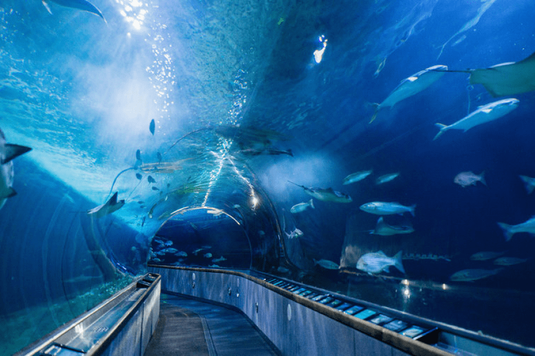
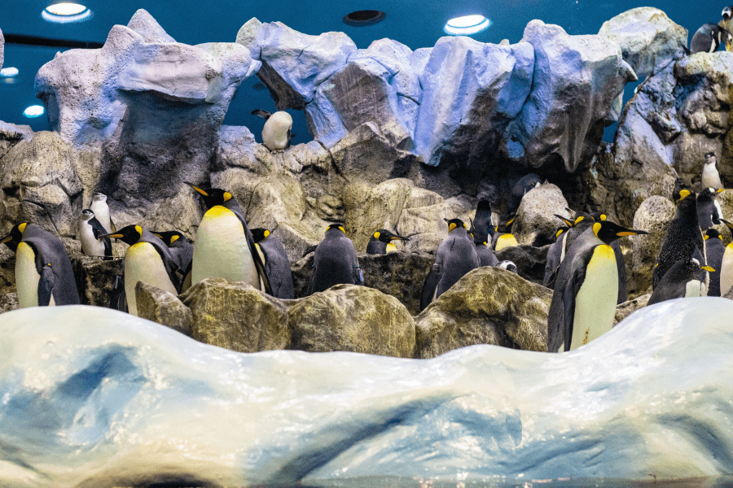

-
票價資訊
-
營業時間
-
園區介紹
-
表演活動
-
個人票價表
*未滿4歲且有家長陪同的幼童可免費入場票種 票價 適用對象 全票 NT$ 550 限18歲(含)以上成人使用 學生票 NT$ 400 限12歲(含)以上持學生證之學生適用 孩童票 NT$ 250 限4歲(含)以上及未滿12歲兒童適用 博愛票 NT$ 250 限持有身心障礙證明者與1位陪同者、孕婦、滿65歲以上長者適用 -
團體票價表
*以上公告及現場標示價格及相關內容Kireiumi Park保有最終解釋權。票種 票價 適用對象 團體優惠票 NT$ 500 團體票價限15人以上適用 學生團體優惠票 NT$ 360 學生團體優惠價限教育局核定公私立學校適用(15人成團)
營業時間
平日(週一至週五)
假日(國定休假日)
* 本館全年無休，若遇任何天候或其它因素而休館將另行公告，敬請留意本館最新消息。
-

海底隧道
除了珊瑚，還有活力充沛的熱帶珊瑚礁魚群，讓遊客體驗宛若水晶宮般的世界，也滿足了探索珊瑚礁的好奇心。
-
大洋池
大陸棚深度達兩百公尺以下的外洋海域，依照水深、光線、水團特性，可分為表、中、深層。居住著許多洄游性物種。
-
白鯨池
有著80萬加侖水量之白鯨展示池，在這個池子裡住著最聰明活潑之海中金絲雀－白鯨。 當置身於透明隧道時，可以看見這些頑皮的動物優游於你的身邊，與你做近距離之接觸。
-
海藻森林
透過展示窗重現美國加州沿岸海藻森林的豐富動植物生態。 其中展示高達10公尺以上的巨藻，讓遊客體驗每日可生長達50公分巨藻所帶來的震撼。
-

極地水域
極地的生物多樣性雖不高，但生物各自發展出很好的適應方法。本區介紹南北極海域的生態特性，藉由企鵝及海鸚鵡的展示，讓遊客見識到在如此寒冷的環境下，牠們是如何生存下來。
-
鯊魚區
此區介紹鯊魚的生活、生存、生殖等生態行為，以及其所面對的環境問題與生存壓力。透過近距離的接觸，來真實感受海洋裡的霸主。
海豚劇場
海豚精靈秀
園區中的超級人氣冠軍王，看那熱情的海豚躍出水面來個360度大翻轉，超可愛的海豚讓我們忍不住的按下快門想留住這瞬間的感動，一個俏皮的小擺動就足以讓現場的我們驚喜連連感動不已。
時間：每日3場，10:30、13:00、14:30
持續時間：25分鐘
地點：海豚劇場
大洋池餵食解說
大洋池餵食解說
充滿神秘與驚奇的海底世界，可供我們從水下觀看海洋生物的生態，讓潛水員帶著我們一起更認識海洋生物吧！
時間：每日3場，10:00、13:00、16:30
持續時間：15分鐘
地點：大洋地區